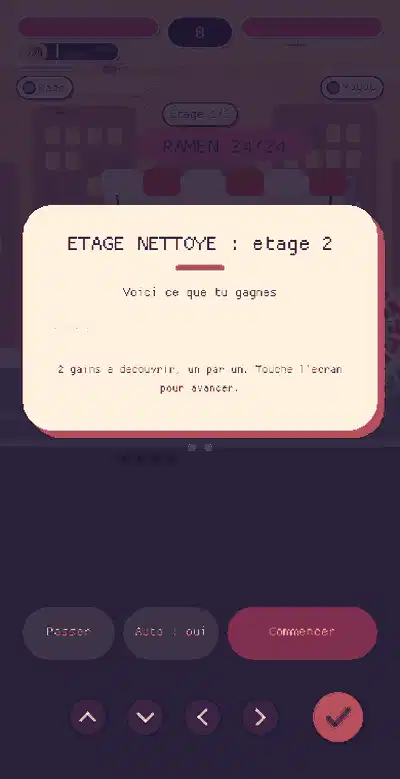
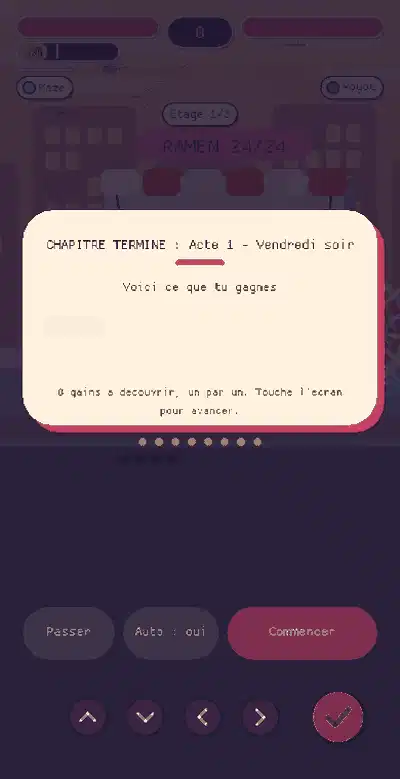
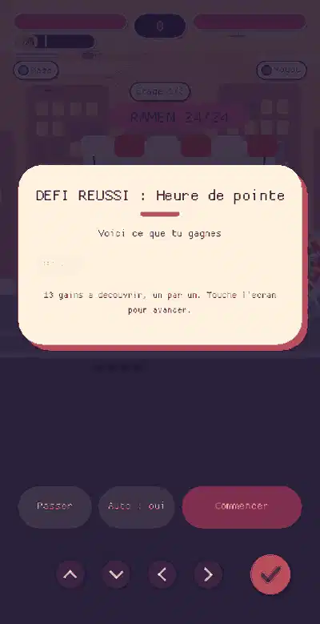

Ton retour : « on gagne des trucs, mais on comprend pas ce qu'on gagne, ni ce que ca change ». Cause : les gains etaient des pastilles et des lignes de texte qui s'enchainaient sans explication. Maintenant : un ecran de bilan, un gain par carte (icone, nom, valeur, phrase d'effet, avant / apres), tu touches pour continuer (zones larges, manette OK), ca avance seul tres lentement, tu peux passer, et « Revoir le bilan » reste dans la pause et en fin de stage. Resume final « Ce qui a change ». Vrai moteur, telephone en portrait. Rien n'est deploye.
Titre « VAGUE TERMINEE », puis le bonus choisi en UNE carte : icone, nom, 2 / 3, la phrase de son effet (« Degats +15 % ») et la comparaison avant / apres (Degats +15 % -> +30 %). Le joueur touche pour continuer ; sinon ca avance seul, lentement (barre rose).
Avant : une banniere de 1,6 s « PUISSANCE ACCRUE ». Maintenant : on lit ce que le bonus change.

Un etage nettoye : le bonus Vampire et, quand on passe le choix, le soin (+35 PV, jauge avant / apres).
Le soin de 35 % n'etait annonce nulle part.
Boss vaincu : l'or decompose (ennemis, boss, or ramasse, prime), la piece d'equipement avec ses statistiques avant / apres et « equipee automatiquement », le daemon gagne et son pouvoir, le niveau du familier, les succes avec leur prime, le stage debloque, le record de combo, puis « Ce qui a change ».
Avant : 4 lignes de texte d'un coup. Maintenant : un gain par carte, badge NOUVEAU, compteur d'or qui monte.

Prime du chapitre, piece gagnee (Plastron titane : PV +40, DEF +1), progression du familier, chapitre suivant debloque. Puis l'epilogue de l'histoire.
Avant : les gains etaient rappeles sous le titre de l'epilogue, jamais lus.

Medaille OR (nouveau record) et sa prime, serie du defi du jour (+10 % par jour), record de combo, or decompose, succes.
La regle de la prime degressive est expliquee dans la carte Compteurs.
Banc : AFH_SCREEN=bilan_wave|bilan_floor|bilan_boss|bilan_chapter|bilan_defi ; sources src/bilan.rs (donnees), src/bilan_ui.rs (dessin), tools/bilan_gifs.py.